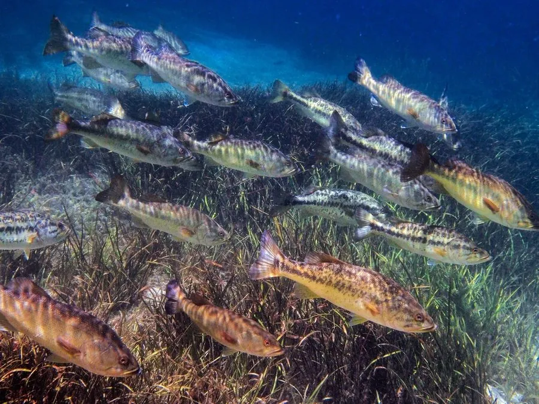

鱼类 · 动物界
大口黑鲈 Micropterus salmoides

原产北美的淡水鲈鱼，口大、背鳍前后相连，生长快、肉质好，被引入中国后成为重要的养殖和路亚对象。
- 分类
- 门脊索动物门纲辐鳍鱼纲目鲈形目科太阳鱼科属黑鲈属
- 栖息环境
- 水草茂密、水流平缓的湖泊、池塘、河流和水库
- 地理分布
- 原产北美洲，现被引入欧洲、亚洲和非洲多地，中国有养殖
- 保护级别
- IUCN 无危（LC）；中国未列入国家重点保护野生动物名录
物种志
大口黑鲈体呈纺锤形，头大，口裂大，上颌骨向后延伸超过眼的后缘，因此得名“大口黑鲈”。体色背部青绿或橄榄色，体侧有一条深色纵带，腹部白色。成鱼体长一般 25–45 cm，最大可达 75 cm，体重可达 10 kg。
大口黑鲈原产北美洲的湖泊、河流和沼泽，如今被引入欧洲、亚洲和非洲多地。它栖息在水草茂密、水流平缓的淡水水域，是凶猛的肉食性鱼类，捕食小鱼、虾蟹、昆虫和蛙类。繁殖期雄鱼在沙底筑巢，护卵护幼。大口黑鲈生长快、肉质细嫩，中国于 20 世纪引入养殖，也是路亚钓爱好者喜爱的对象。由于其捕食性强，在部分引入地可能影响本土鱼类，需规范养殖和放流。
形态与习性
- 食性肉食性，捕食小鱼、虾蟹、昆虫和蛙类
- 体长一般 25–45 cm，最大可达 75 cm
- 体重常见 0.5–2 kg，最大可达 10 kg
- 繁殖雄鱼在沙底筑巢，护卵护幼
- 引入历史中国于 20 世纪引入，现为重要养殖品种
- 生态影响捕食性强，在引入地可能影响本土鱼类
趣味知识
- 大口黑鲈的口裂很大，上颌骨向后可超过眼的后缘。
- 繁殖期雄鱼会筑巢并守护鱼卵和幼鱼。
- 它是路亚钓爱好者喜爱的对象鱼，咬钩凶猛、挣扎有力。